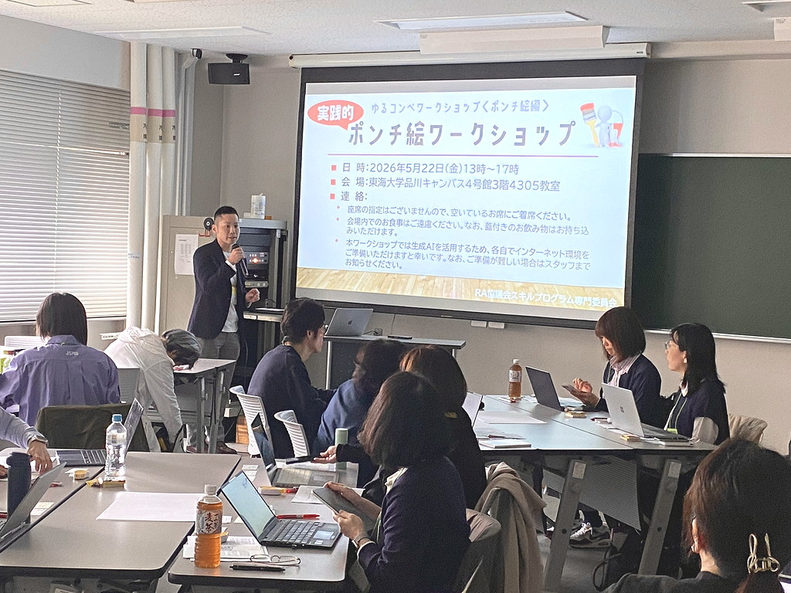
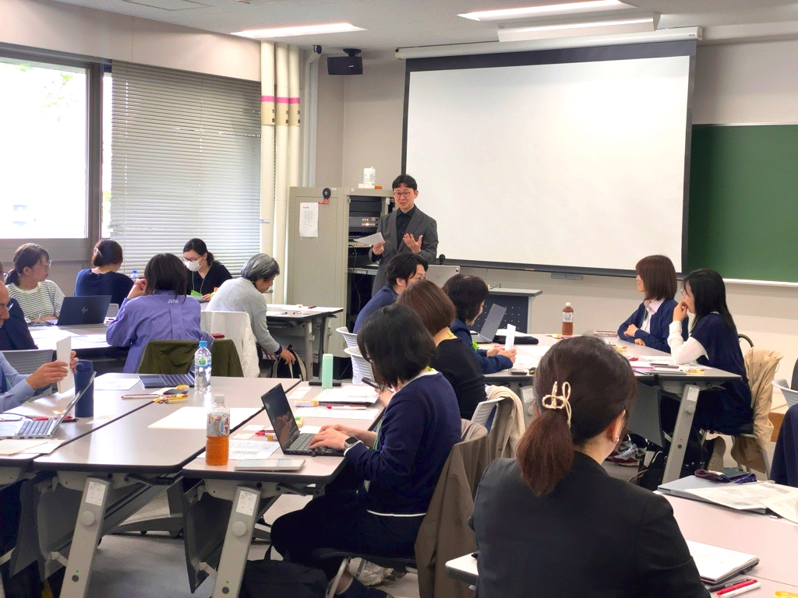
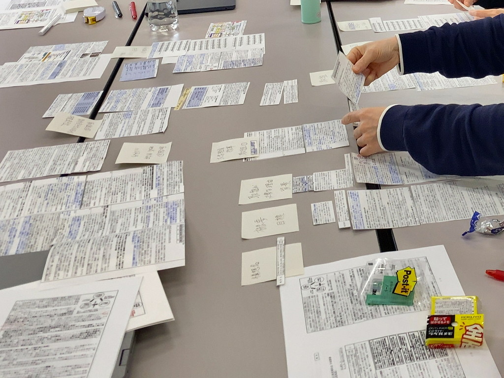
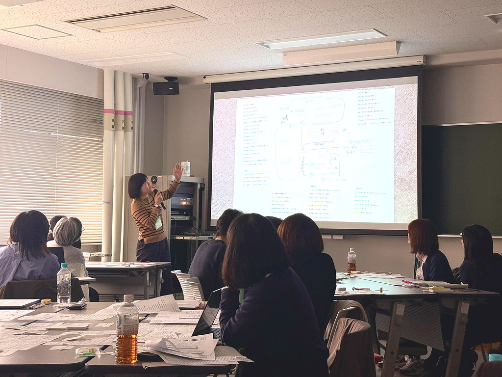

ゆるコンペ〈ポンチ絵編〉
実践的ポンチ絵ワークショップ 開催報告
RA協議会・スキルプログラム専門委員会は、2026年5月22日(金)、東海大学品川キャンパスにおいて「ゆるコンペ〈ポンチ絵編〉・実践的ポンチ絵ワークショップ」を開催しました。
本ワークショップは、今後開催する「ゆるコンペ」に向けた準備企画として位置付けられ、外部資金申請や事業計画の説明において重要性が高まっている「ポンチ絵」の作成スキルを、実践的に学ぶ機会として開催されたものです。
当日は、大学・研究機関のURAを中心に27名が参加し、レクチャーとワークを組み合わせたプログラムを通じて、ポンチ絵作成に必要な思考プロセスとスキルの習得を目指しました。
実施概要
本ワークショップでは、東海大学教養学部芸術学科の富田誠教授を講師にお迎えし、視覚的対話や図解表現の専門的知見をもとに、ポンチ絵作成に関するレクチャーおよびワークを実施しました。
プログラムは、レクチャーと2つのワークを軸に構成され、単なるデザイン技術の習得に留まらず、「情報を構造的に理解し、それを第三者に伝える形に翻訳する」という全体のプロセスを体験的に学ぶ内容となりました。

（写真1）ワークショップのオープニングゆるコンペを主催する久保氏より趣旨説明
レクチャー：ポンチ絵の本質と視覚的思考
レクチャーでは、ポンチ絵の役割や位置付け、図解表現の考え方が紹介されました。特に、文章中心の情報を図として再構成するには、「まず自分が内容を理解していること」が不可欠であり、図を作る行為そのものが理解を深めるプロセスであることが強調されました。
また、研究計画や政策説明における図解の役割や、視覚的対話の重要性について、具体的事例を交えて解説が行われました。

（写真2）レクチャーの様子ポンチ絵の考え方や図解表現のポイントについて解説する富田教授
ワーク1：資料の構造を“身体的に理解する”
最初のワークでは、実際の事業申請資料（令和４年度国立大学改革・研究基盤強化推進補助金（国立大学経営改革促進事業）に採択された信州大学の計画調書）を題材に、文章を切り分けて再配置する演習を行いました。
参加者は資料を物理的に切り分け、それらをグループで再構成することで、目的・課題・施策・成果といった要素間の関係性を整理しました。このプロセスにより、単に読むだけでは捉えにくい構造を可視化し、内容理解を深めました。

（写真3）ワーク1の様子①資料を切り分け、関係性を配置
ワーク2：ポンチ絵の作成と可視化
続くワークでは、前段で整理した内容をもとに、A3用紙上でポンチ絵を制作しました。
文章要素の配置に加え、付箋や手書きの図を用いて、人物や組織の関係性、時間軸、因果関係などを視覚的に表現しました。さらに、作成した図を生成AIでブラッシュアップするプロセスも取り入れ、実務に直結するスキルの活用方法も体験しました。
 （写真4）ワーク2の様子
（写真4）ワーク2の様子
ポンチ絵制作に取り組み、図としての表現を検討
ポンチ絵として、図の表現を検討
全体共有：多様な表現の気づき
最後には、各グループ・個人で作成したポンチ絵を持ち寄り、全体で共有・講評を行いました。
同じ題材であっても、構造の捉え方や表現方法によって伝わり方が大きく異なることが示され、多様な視点に触れることで、理解を深める機会となりました。

（写真5）全体共有の様子参加者の代表が作成したポンチ絵を発表
参加者の声と成果
参加者の多くは、外部資金申請や研究支援に携わるURAであり、「ポンチ絵を作成する機会は多いが、体系的に学ぶ機会が少ない」という課題意識を持って参加しました。
ワークショップ後のアンケートでは、本プログラムが実務に直結する内容であったことに対し、高評価が寄せられました。特に、以下のような具体的な声が印象的でした。
「これまで何となく作っていたポンチ絵について、“なぜ分かりにくいのか”の原因が理解できました。」
「資料を切り分けて構造化するワークが非常に有効で、自分が内容を理解していない部分が明確になりました。」
「図をきれいに描く前に『考えること』が重要だと実感しました。今後の申請支援業務にすぐ活かせそうです。」
「他の参加者のポンチ絵を見ることで、同じ内容でも表現によって伝わり方が大きく変わることに気づきました。」
おわりに
本ワークショップは、「ゆるコンペ〈ポンチ絵編〉」の事前企画として、参加者が実践に挑戦するための基盤づくりを目的に実施しました。
ポンチ絵の作成は単なる図表作成ではなく、「理解し、整理し、伝える」ための高度な思考プロセスを伴うスキルです。本ワークショップを通じて、その重要性と具体的なアプローチを共有できたことは、今後のURA業務の高度化にも資するものと考えています。
現在募集されている「ゆるコンペ〈ポンチ絵編〉」においても、本ワークショップで得られた学びが活かされ、参加者同士の更なるスキル向上と交流につながることが期待されます。